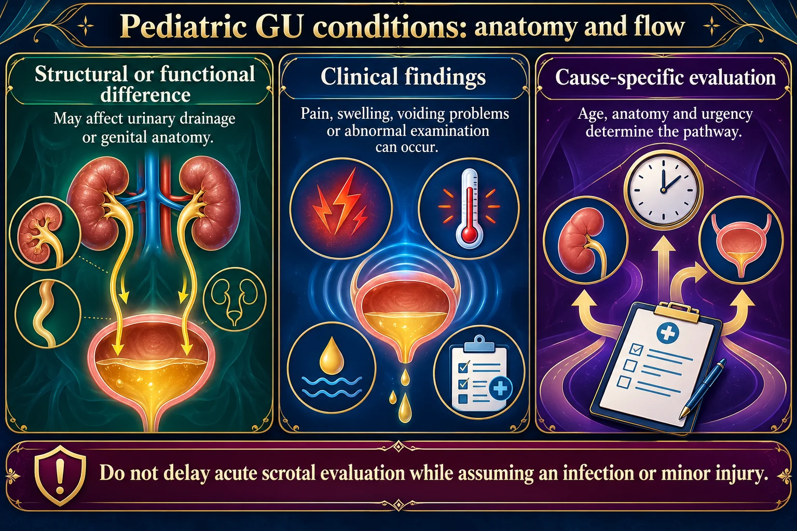
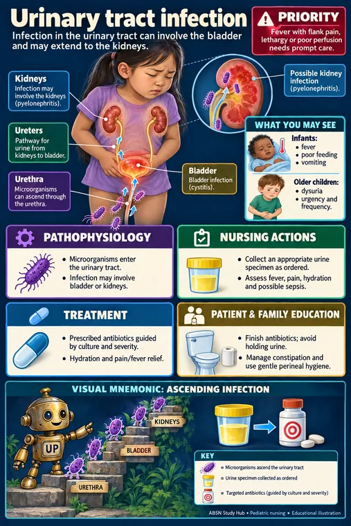
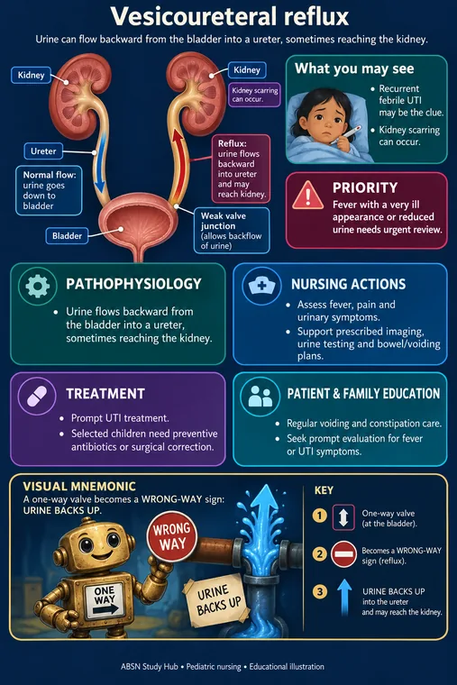

💧 Pediatric Genitourinary
Undescended testes, hypospadias, enuresis and pinworms — the small things that come up constantly.
🩸 Cryptorchidism & hypospadias

Do not circumcise a baby with hypospadias - the surgeon uses that foreskin to rebuild the urethra.
Do not delay acute scrotal evaluation while assuming an infection or minor injury.
Read the picture
Structural or functional difference
May affect urinary drainage or genital anatomy.
Clinical findings
Pain, swelling, voiding problems or abnormal examination can occur.
Cause-specific evaluation
Age, anatomy and urgency determine the pathway.
Urinary concerns
Fever, low output, recurrent infection or obstructed flow needs assessment.
Genital findings
Undescended testes or hypospadias require specialist planning.
Acute scrotum
Sudden testicular pain or swelling is an emergency because torsion must be excluded.

| CRYPTORCHIDISM | HYPOSPADIAS | |
|---|---|---|
| What | Testis has not descended | Urethral opening on the underside of the penis |
| Found | Newborn exam; empty scrotum | Newborn exam; abnormal stream |
| Repaired | Orchiopexy, usually by 6–18 months | Usually 6–18 months |
| Key rule | Repair protects fertility and allows cancer surveillance | DO NOT CIRCUMCISE — the foreskin is needed for the repair |
A newborn with hypospadias must not be circumcised. The surgeon uses that foreskin tissue to reconstruct the urethra.
✅ After repair
- Double diaper technique to protect the stent or catheter
- Watch for urine output and any bleeding
- Avoid straddle toys, sandpits and rough play for a few weeks
- Encourage fluids
- After orchiopexy the testis is stitched in place — no bike riding or straddling while healing
🛀 Enuresis
Bedwetting is normal until about age 5, and even then it is common. It is not laziness and it is not deliberate.
New bedwetting in a previously dry child is the red flag, not longstanding bedwetting.
Think: urinary tract infection, type 1 diabetes, constipation, emotional stress or abuse.
Sudden onset of wetting in a dry child is investigated, not managed with a star chart.
✅ What actually helps
- Never punish or shame — it worsens outcomes and damages self-esteem
- Fluids earlier in the day; limit in the two hours before bed
- Empty the bladder immediately before sleep; treat constipation, which is a common cause
- Bedwetting alarm is the most effective long-term treatment
- Desmopressin for short-term needs like sleepovers or camp
- Reward effort — taking a drink earlier, going to the toilet — not dry nights, which they cannot control
🧠 Toilet training readiness
Usually 18–24 months and beyond. Look for readiness rather than pushing a date:
- Stays dry for 2 hours; wakes dry from a nap
- Can walk to the toilet, sit and pull down clothing
- Shows awareness of needing to go; can say so
- Shows interest and wants to please
Regression during stress is normal — a new baby, hospital admission, starting nursery. Handle it without comment and it usually resolves.
🦠 Pinworms & UTI
🦠 Pinworms (enterobiasis)
The classic sign is intense anal itching at night, when the female worm emerges to lay eggs. The child sleeps badly and is irritable.
- Tape test — clear tape pressed to the perianal skin first thing in the morning, before washing or opening the bowels
- Treat the whole household; a second dose in 2 weeks catches the next cycle
- Wash bedding and nightclothes in hot water; keep fingernails short; hand hygiene, especially after the toilet and before eating
- Reassure parents — it is extremely common and says nothing about cleanliness
💧 Pediatric UTI
Infants present non-specifically: fever, poor feeding, vomiting, irritability, jaundice in a newborn — not dysuria.
A febrile infant with no obvious source needs a urine sample. Missing pyelonephritis scars the kidney permanently.
Teaching: wipe front to back, cotton underwear, avoid bubble baths, empty the bladder fully and often, treat constipation, and plenty of fluids.
Recurrent infections prompt investigation for vesicoureteral reflux.

🧒 Urinary tract infectionPicture, memory hook and nursing care →
🧒 Vesicoureteral refluxPicture, memory hook and nursing care →🎯 NCLEX traps
- Hypospadias → no circumcision
- Orchiopexy protects fertility
- New bedwetting is investigated; longstanding is managed
- Never punish for wetting
- Tape test in the morning before washing
- Febrile infant, no source → check the urine